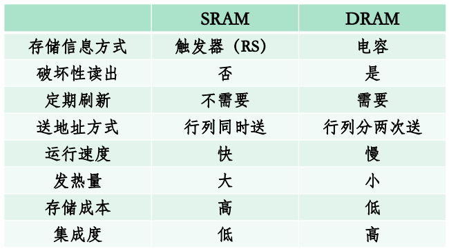
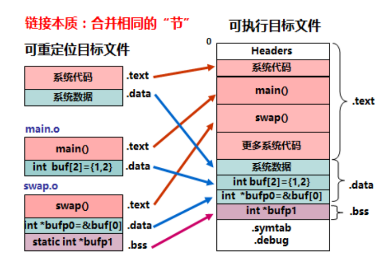
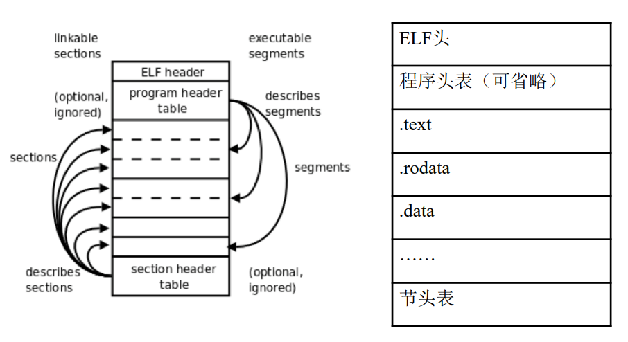
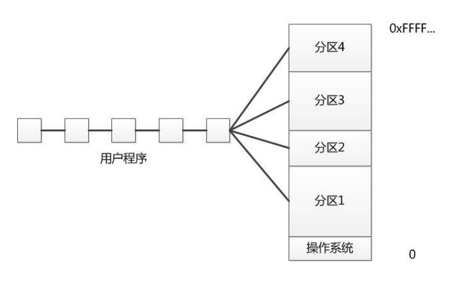
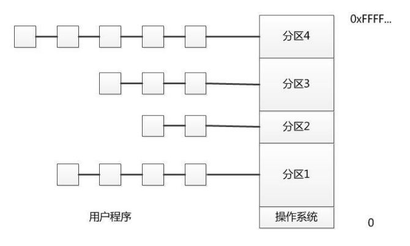
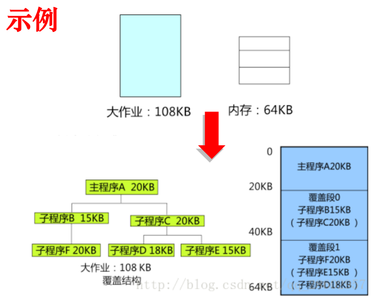
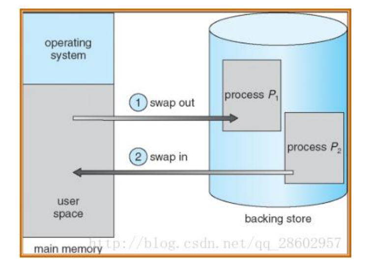

操作系统内存管理复习
存储器（非重要）
DRAM(动态存储器)和SRAM(静态存储器)的对比

分类
- RAM: Random Access Memory
- SRAM
- DRAM
- SDRAM,DDR SDRAM
ROM: Read Only Memory
- PROM,EPROM,EEPROM
Flash memory(SSD)
- Nor
- NAND
Disk(磁盘)
Tape(磁带)
GCC包含的几个工具
- CC1 : 预处理器和编译器
- as : 汇编器
- collect2 : 链接器
程序装入、执行的过程
一般要经历预处理、编译、链接、重定位、装入。
链接

重定位
重定位分为静态重定位和动态重定位。
装入
流程
- ELF头魔数检验
- 找到段表项
- 根据段表项解析出各个段应当被加载到的虚地址，在文件中的偏移。
- 正式加载每一段，分配物理页面，并按虚地址映射。
- 用0填充内存和文件大小不匹配的区域
- 改PC为入口地址
- 开始执行
段
我们只需要了解bss段，data段和text段。
bss:用来存放程序中未初始化的全局变量的一块内存区域。bss是英文Block Started by Symbol的简称。bss段属于静态内存分配。
data:数据段（data segment）用来存放程序中已初始化的全局变量的一块内存区域。数据段属于静态内存分配。
text:代码段（code segment/text segment）用来存放程序执行代码的一块内存区域。
栈和堆
- 栈：存放局部变量，函数压栈（静态）
- 堆：存放malloc等分配的内容（动态增缩）
整体细节
- 程序的入口点一般不是main函数，在此之前要做一些准备才能跳转到main函数。
- 一个segment在文件中的大小是小于等于其在内存中的大小。
- 如果在文件中的大小小于在内存中的大小，那么在载入内存时通过补零使其达到其在内存中应有的大小。
- 代码段和数据段都在segment中
ELF文件

这个连接将程序头表/段头表讲的很清楚，注意的是他以64位为基础。ELF 文件解析 3-段
这个连接将节头表讲的很清楚，注意的是他以64位为基础。ELF 文件解析 1-节
存储管理
基石
- 地址独立：程序发出的地址与物理地址无关
- 地址保护：一个程序不能访问另一个程序的地址空间
解决的问题
分配和回收分配
三种方式
直接指定、静态分配、动态分配。直接指定
用实际物理地址进行分配静态分配
均从逻辑地址的0地址开始，链接装入时才能确认在物理内存中的地址动态分配
同样是装入时确认在物理内存中的地址，但可以动态控制程序的大小
内存管理
单道程序比较简单、采用直接指定的方式。
多道程序
空间分配
分区式分配：把内存分为一些大小相等或不等的分区(partition)，每个应用程序占用一个或几个分区。操作系统占用其中一个分区。
划分分区的方法
固定式分区
定义
把内存划分为若干个固定大小的连续分区。
分配方式
- 单队列分配：无论大小，统一排队等待分配
 - 多队列分配：根据分区的大小，开多个队列针对各个分区进行分
总结
- 优点：易于实现，开销小
- 缺点：内碎片造成浪费，分区数目固定，限制了并发程序数目
- 数据结构： 分区表，记录分区大小和使用情况
可变式分区
定义
分区的边界可以移动，即分区的大小可变。
分配算法
- 首次适应：每个空白区按其在存储空间中地址递增的顺序连在一起，在为作业分配存储区域时，从这个空白区域链的始端开始查找，选择第一个足以满足请求的空白块。
- 下次适应：把存储空间中空白区构成一个循环链，每次为存储请求查找合适的分区时，总是从上次查找结束的地方开始，只要找到一个足够大的空白区，就将它划分后分配出去。
- 最佳适应算法：为一个作业选择分区时，总是寻找其大小最接近于作业所要求的存储区域。
- 最坏适应算法：为作业选择存储区域时，总是寻找最大的空白区
- 快速适应算法：把空闲分区按容量大小进行分类，经常用到长度的空闲区设立单独的空闲区链表。系统为多个空闲链表设立一张管理索引表。分配时根据索引直接查表，取下合适的空闲区链表首项即可。
- 伙伴系统：分区均为2的n次幂，对于一个分配请求，向上取整找最合适的，如果没有，就将大的拆成两个最合适的，一个挂在表中，一个分配，这两个成为伙伴，只有两个同时空闲，就会向上重新合并成大的，直到合不了位置。
碎片
- 内碎片：指分配给作业的存储空间中未被利用的部分，如固定分区中存在的碎片。
- 外碎片：指系统中无法利用的小的空闲分区。如分区与分区之间存在的碎片。这些不连续的区间就是外部碎片。动态分区管理会产生外部碎片，可以通过紧凑进行进行缓解，通过多重分区分配进行缓解。
分区保护
- 界限寄存器：上下界寄存器方法、基址、限长寄存器方法。
- 存储保护键方法：给存储块配锁，访问前看锁和钥匙是否匹配。
内存扩展
覆盖
定义
把一个程序划分为一系列功能相对独立的程序段，让执行时不要求同时装入内存的程序段组成一组（称为覆盖段） ，共享主存的同一个区域，这种内存扩充技术就是覆盖。
工作主体
程序员指明覆盖结构，操作系统完成。
图示

交换
定义
广义的说，所谓交换就是把暂时不用的某个（或某些）程序及其数据的部分或全部从主存移到辅存中去，以便腾出必要的存储空间；接着把指定程序或数据从辅存读到相应的主存中，并将控制转给它，让其在系统上运行。
工作主体
操作系统独立完成。
图示

区别
- 覆盖可减少一个程序运行所需的空间。交换可让整个程序暂存于外存中，让出内存空间。
- 覆盖是由程序员实现的，操作系统根据程序员提供的覆盖结构来完成程序段之间的覆盖。交换技术不要求程序员给出程序段之间的覆盖结构。
- 覆盖技术主要对同一个作业或程序进行。交换主要在作业或程序间之间进行。
本博客所有文章除特别声明外，均采用 CC BY-NC-SA 4.0 许可协议。转载请注明来自 ForeverYolo的博客！
相关推荐


评论